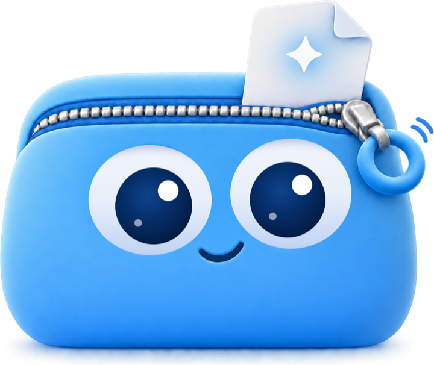
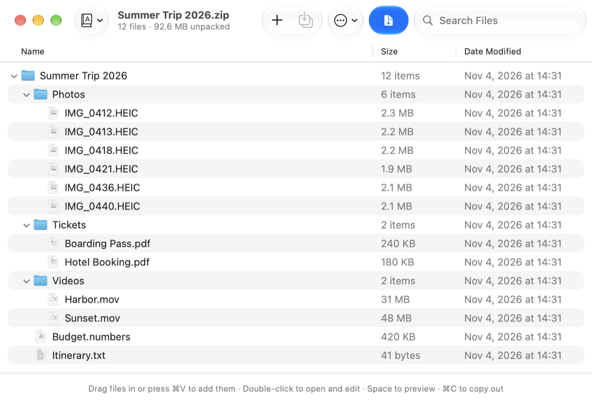
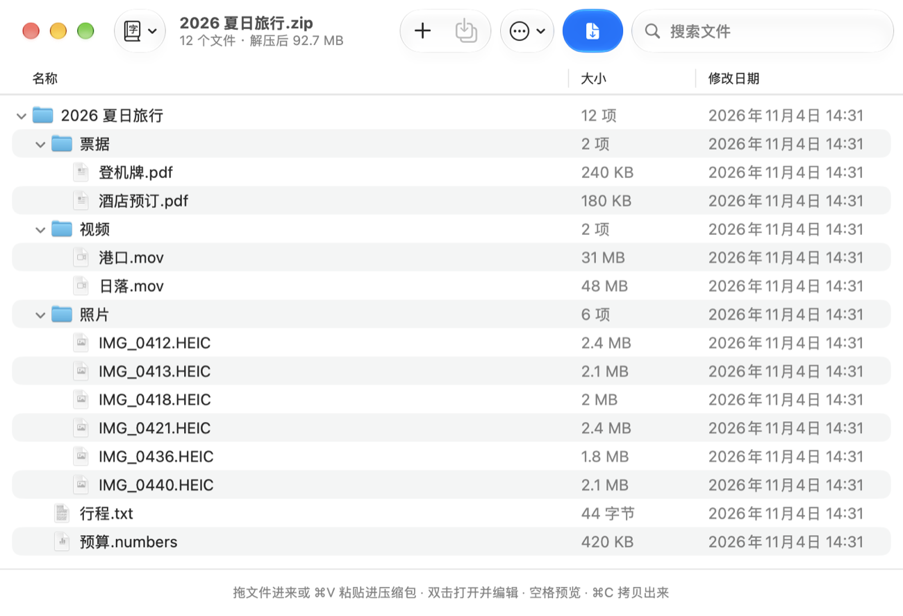
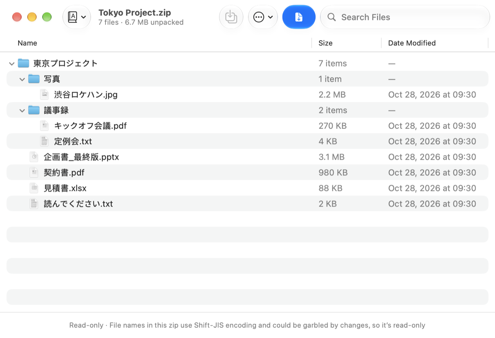
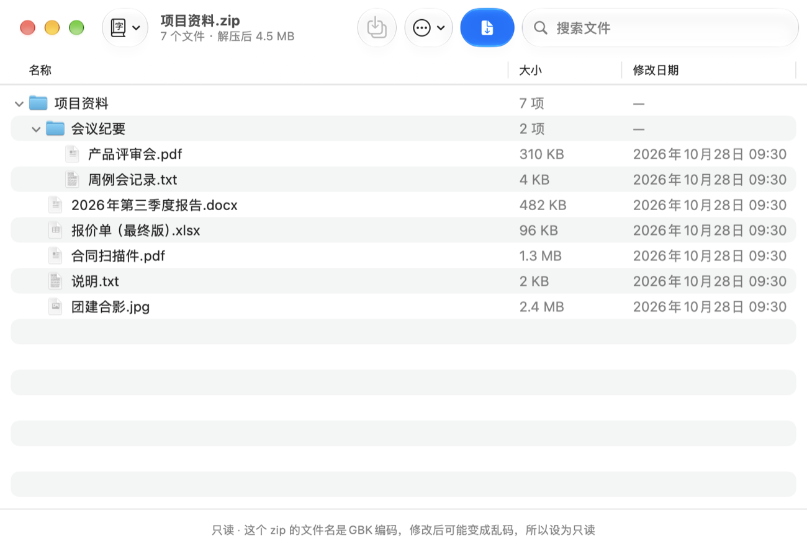
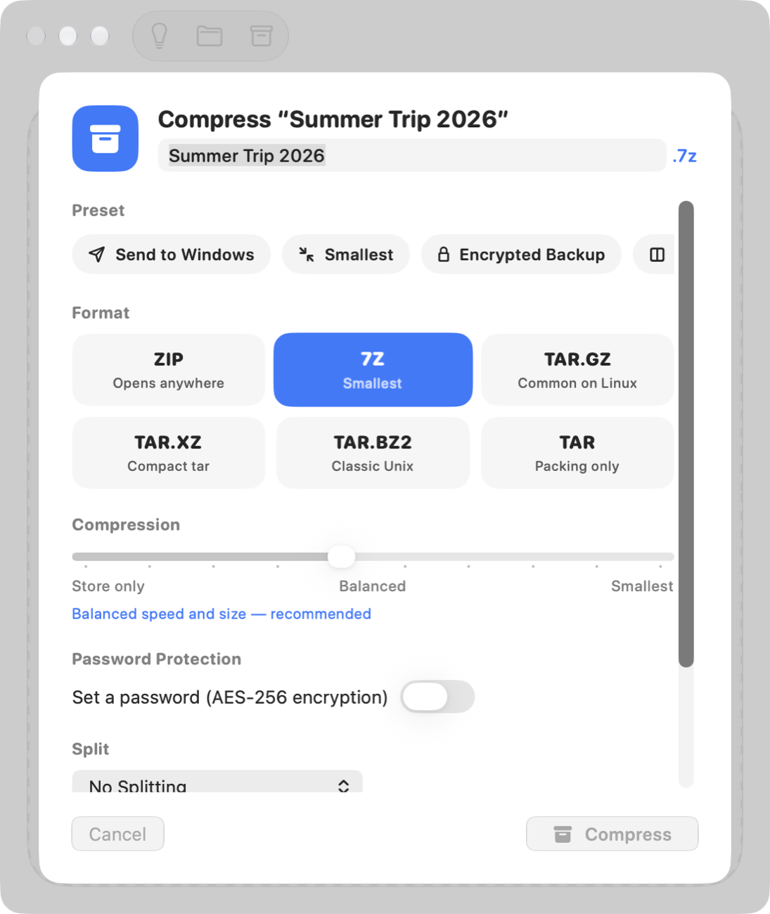
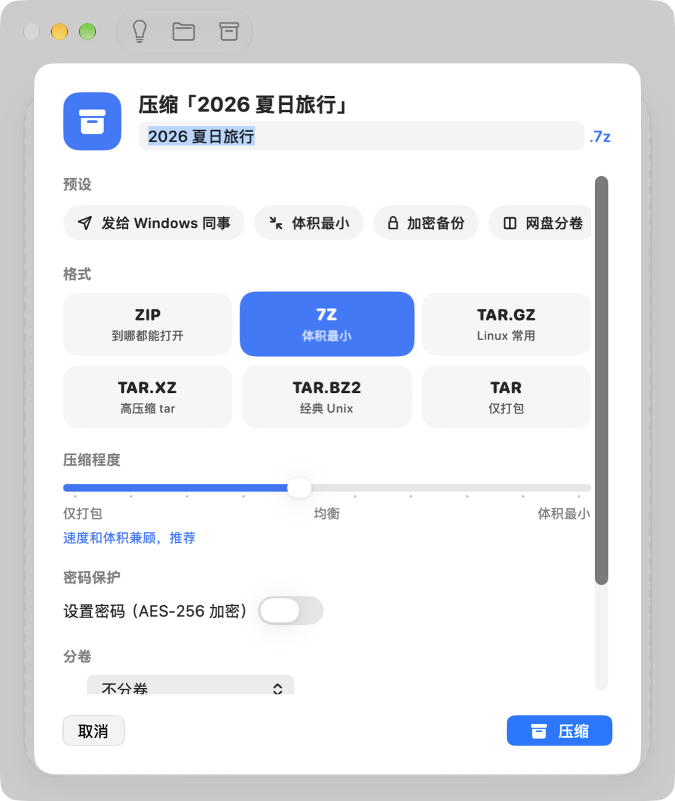

Pouchlet opens RAR, 7Z, ZIP and more on your Mac — or lets you look inside first and take only what you need. Pouchlet 帮你打开 RAR、7Z、ZIP 等各种压缩包，也可以先看看里面有什么，只拿你需要的。


Browse any archive like a folder, preview with Space, drag out only what you need.像文件夹一样浏览压缩包，按空格预览，只拖出你要的文件。
Chinese, Japanese and Korean names from Windows are detected and fixed automatically.Windows 传来的中、日、韩文件名，自动识别编码并修好。
No folder-inside-a-folder, no __MACOSX or .DS_Store left behind.不会文件夹套文件夹，也不会留下 __MACOSX、.DS_Store。
Select an archive in Finder and press Space: folders, file count and unpacked size, without extracting a thing.在“访达”里选中压缩包按空格，文件夹、文件数量、解压后大小一目了然，什么都不用解压。
Archives made on Windows often store names in GBK, Big5, Shift-JIS or EUC-KR. Pouchlet reads them, picks the right one, and shows every name the way it was meant.Windows 上做的压缩包，文件名常用 GBK、Big5、Shift-JIS 或 EUC-KR 编码。Pouchlet 会自动判断，把每个名字都显示正确。


Built on the official 7-Zip engine and tuned for every core of Apple silicon.基于官方 7-Zip 引擎，为 Apple 芯片的每一个核心调校。
Measured on a Mac with M4. “Built-in” means the ditto and bsdtar tools that come with macOS. Shorter is better.在 M4 芯片的 Mac 上测得。“系统自带”指 macOS 自带的 ditto 和 bsdtar 工具。越短越好。


Pouchlet has no accounts, no tracking and no network connections. Passwords you choose to remember stay in your own Keychain.没有账户，没有追踪，也不联网。你选择记住的密码只保存在你自己的钥匙串里。 Privacy policy隐私政策
The friendliest way to open and make archives on your Mac.Mac 上最顺手的压缩与解压工具。